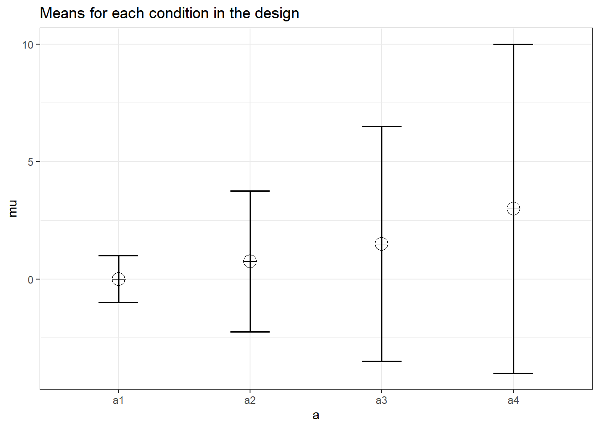

Chapter 13 Estimated Marginal Means
Thank you to Fredrick Aust for developing the emmeans_power function
In many cases researchers may not be interested in the ANOVA-level effects, but rather in the power to detect a specific comparisons within the data. For example, you may have hypothesis about equivalence rather than a difference between groups. In these cases, we then need to obtain the “estimated marginal means” (EMMs), also known as the least squared means (lsmeans for SAS users), which can be done in R with the emmeans package and this is what Superpower uses “under the hood”. The EMMs refer to the mean of a group or set of groups within a statistical model.
For Superpower, you can estimate EMMs power for your designs in three different ways: ANOVA_power, ANOVA_exact, emmeans_power. Both ANOVA_power and ANOVA_exact allow for EMMs comparisons to be run along side the ANOVA-level comparisons. To do this, you will need to set a few parameters within the function.
emm: tell the function to run emmeans or not; default is set toFALSE.contrast_type: This input will determine the contrast type for the emmeans comparisons. The default is “pairwise”. Possible input is limited to “pairwise”, “revpairwise”, “eff”, “consec”, “poly”, “del.eff”, “trt.vs.ctrl”, “trt.vs.ctrl1”, “trt.vs.ctrlk”, and “mean_chg”. See help(“contrast-methods”) with theemmeanspackage loaded for more information.emm_model: emmeans accepts univariate and multivariate models. This will only make a difference if a within-subjects factor is included in the design. Setting this option to “multivariate” will result in the “multivariate” model being selected for the emmeans comparisons. This is generally recommended if you are interested in the estimated marginal means.emm_comp: This selects the factors to be included for the emmeans. The default is to take thefrml2object from the results ofANOVA_design, and with the defaultcontrast_type = "pairwise", results in all the pairwise comparisons being performed. The simple effects can also be perfomed by including | in the emm_comp formula. For example, with two factors (e.g., a and b)emm_comp = "a+b"results in all pairwise comparisons being performed whileemm_comp = "a|b"will result in pairwise comparisons across all levels of a within each level of b.emm_p_adjust(ANOVA_poweronly): This sets the correction for multiple comparisons for the EMMs; default is “none”. Whenemmeansis installed you can check ?summary.emmGrid for more details on acceptable methods for EMMs. Please not that these corrections can only be applied in theANOVA_powerfunction at this time.
If you want to go beyond the simple comparions that can be accomplished with ANOVA_power or ANOVA_exact then you can use the emmeans_power function directly. In this chapter, we will show how to use all three functions on their own or in combination with each other.
13.1 A note of caution
When conducting exact ANOVA power analyses with Superpower it is possible to calculate the power for both the omnibus \(F\)-tests and planned contrasts or post-hoc comparisons.
All power analyses for emmeans-objects are based on the \(F\)- and \(t\)-values from the analyses of the dataset simulated by ANOVA_exact() assuming two-sided testing.
Thus, the emmeans_power() does not honor adjustments of the testing procedure due to either one-sided testing (including two one-sided tests) or corrections for multiple comparisons via the adjust option in emmeans.
As noted below, for the Bonferroni-adjustment this limitation can be overcome by manually adjusting alpha_level.
13.2 Pairwise Comparisons
This is the most common form of using EMMs. In our experience, many people will first inspect the ANOVA-level effects and then goes into the individual group comparisons.
First, we can setup a 2 \(\times\) 3 repeated measures design.
When calling ANOVA_exact() pairwise comparisons of expected marginal means are added by setting emm = TRUE and contrast_type = "pairwise" (default).
The emm_comp parameter will automatically be set to condition*voice.
If you wanted to look at the main effect of condition or voice all you need to do is set emm_comp to that specific factor rather than the interaction.
# Set up a within design with 2 factors, each with 2 and 3 levels
design_result <- ANOVA_design(
design = "2w*3w",
n = 40,
mu = c(0.3, 0, 0.5, 0.3, 0, 0),
sd = 2,
r = 0.8,
labelnames = c("condition", "cheerful", "sad", "voice", "human", "robot", "cartoon"),
plot = TRUE
)
exact_result <- ANOVA_exact(
design_result,
alpha_level = 0.05,
verbose = FALSE,
emm = TRUE,
contrast_type = "pairwise"
)The result contains the power calculations for both the omnibus \(F\)-tests and pairwise post-hoc comparisons.
| power | partial_eta_squared | |
|---|---|---|
| condition | 29.08380 | 0.0507099 |
| voice | 50.12584 | 0.0621242 |
| condition:voice | 41.62968 | 0.0507099 |
| contrast | power |
|---|---|
| condition_cheerful voice_cartoon - condition_sad voice_cartoon | 68.37160 |
| condition_cheerful voice_cartoon - condition_cheerful voice_human | 16.41134 |
| condition_cheerful voice_cartoon - condition_sad voice_human | 16.41134 |
| condition_cheerful voice_cartoon - condition_cheerful voice_robot | 68.37160 |
| condition_cheerful voice_cartoon - condition_sad voice_robot | 68.37160 |
| condition_sad voice_cartoon - condition_cheerful voice_human | 30.99652 |
| condition_sad voice_cartoon - condition_sad voice_human | 30.99652 |
| condition_sad voice_cartoon - condition_cheerful voice_robot | 5.00000 |
| condition_sad voice_cartoon - condition_sad voice_robot | 5.00000 |
| condition_cheerful voice_human - condition_sad voice_human | 5.00000 |
| condition_cheerful voice_human - condition_cheerful voice_robot | 30.99652 |
| condition_cheerful voice_human - condition_sad voice_robot | 30.99652 |
| condition_sad voice_human - condition_cheerful voice_robot | 30.99652 |
| condition_sad voice_human - condition_sad voice_robot | 30.99652 |
| condition_cheerful voice_robot - condition_sad voice_robot | 5.00000 |
The output also contains the emmeans-object on which these power calculations are based.
By manipulating this object it is possible to tailor the power analyses to the contrasts desired for the planned study.
That is, based on the dataset simulated with ANOVA_exact() we can write out the analysis code for emmeans-contrasts, just as we would if we were to analyse the empirical data, and use the output to perform the corresponding power analysis.
13.3 Customized emmeans contrasts
The emmeans reference grid and contrasts are included in the output of ANOVA_exact(). This can be accessed through exact_result$emmeans
By using emmeans_power() on the contrasts, we can reproduce the results of the previous power analysis for the pairwise comparisons.
| contrast | power |
|---|---|
| condition_cheerful voice_cartoon - condition_sad voice_cartoon | 68.37160 |
| condition_cheerful voice_cartoon - condition_cheerful voice_human | 16.41134 |
| condition_cheerful voice_cartoon - condition_sad voice_human | 16.41134 |
| condition_cheerful voice_cartoon - condition_cheerful voice_robot | 68.37160 |
| condition_cheerful voice_cartoon - condition_sad voice_robot | 68.37160 |
| condition_sad voice_cartoon - condition_cheerful voice_human | 30.99652 |
| condition_sad voice_cartoon - condition_sad voice_human | 30.99652 |
| condition_sad voice_cartoon - condition_cheerful voice_robot | 5.00000 |
| condition_sad voice_cartoon - condition_sad voice_robot | 5.00000 |
| condition_cheerful voice_human - condition_sad voice_human | 5.00000 |
| condition_cheerful voice_human - condition_cheerful voice_robot | 30.99652 |
| condition_cheerful voice_human - condition_sad voice_robot | 30.99652 |
| condition_sad voice_human - condition_cheerful voice_robot | 30.99652 |
| condition_sad voice_human - condition_sad voice_robot | 30.99652 |
| condition_cheerful voice_robot - condition_sad voice_robot | 5.00000 |
Now, we can manipulate the emmeans reference grid to perform additional power analyses.
In the following example, we calculate the power for the contrasts between sad and cheerful condition for each voice.
simple_condition_effects <- emmeans(
exact_result$emmeans$emmeans,
specs = ~ condition | voice
)
knitr::kable(emmeans_power(pairs(simple_condition_effects))[1:2])| contrast | voice |
|---|---|
| condition_cheerful - condition_sad | voice_cartoon |
| condition_cheerful - condition_sad | voice_human |
| condition_cheerful - condition_sad | voice_robot |
We may also calculate the power for testing all condition means against an arbitrary constant. Remember, these are two-tailed tests, so it is not testing against the null that the individual cells in the design are more or less than 0.5, but rather different from 0.5 at all.
| condition | voice |
|---|---|
| condition_cheerful | voice_cartoon |
| condition_sad | voice_cartoon |
| condition_cheerful | voice_human |
| condition_sad | voice_human |
| condition_cheerful | voice_robot |
| condition_sad | voice_robot |
Finally, we can calculate the power for custom contrasts between any linear combination of conditions.
custom_contrast <- contrast(
exact_result$emmeans$emmeans,
list(robot_vs_sad_human = c(0, 0, 0, 1, -0.5, -0.5))
)
knitr::kable(emmeans_power(custom_contrast))| contrast | power | partial_eta_squared | cohen_f | non_centrality |
|---|---|---|---|---|
| robot_vs_sad_human | 39.34971 | 0.0714286 | 0.2773501 | 3 |
Although emmeans_power() currently ignores adjustments for multiple comparisons, it is possible to calculate the power for Bonferroni-corrected tests by adjusting alpha_level.
n_contrasts <- nrow(as.data.frame(simple_condition_effects))
knitr::kable(emmeans_power(
pairs(simple_condition_effects),
alpha_level = 0.05 / n_contrasts
)[1:3])| contrast | voice | power |
|---|---|---|
| condition_cheerful - condition_sad | voice_cartoon | 40.1555499 |
| condition_cheerful - condition_sad | voice_human | 0.8333333 |
| condition_cheerful - condition_sad | voice_robot | 0.8333333 |
Similarly, if we want to calculate power for a one-sided test, we can use the “hack” of doubling the alpha_level parameter.
| contrast | voice | power | partial_eta_squared | cohen_f | non_centrality |
|---|---|---|---|---|---|
| condition_cheerful - condition_sad | voice_cartoon | 79.14507 | 0.1381215 | 0.4003204 | 6.25 |
Note, that because power is calculated from the squared \(t\)-value, power is only calculated correctly if the alternative hypothesis is true in the simulated dataset. That is, the difference of the condition means is consistent with the tested directional hypothesis.
13.4 Equivalence and non-superiority/-inferiority tests
Because emmeans can perform equivalence, non-superiority, and -inferiority tests, emmeans_power() can calculate the corresponding power for these tests.
knitr::kable(emmeans_power(
pairs(simple_condition_effects, side = "equivalence", delta = 0.3)[2]
)[1:2])| contrast | voice | |
|---|---|---|
| 2 | condition_cheerful - condition_sad | voice_human |
Note, that because power is calculated from the squared \(t\)-value, power is only calculated correctly if the alternative hypothesis is true in the simulated dataset.
That is, the difference between the condition means is consistent with the tested directional hypothesis (smaller than delta).
13.5 Joint tests
Another useful application of emmeans_power() is to joint tests.
Lets assume we plan to test the main effect of voice for each of the two conditions separately using joint_tests().
We can then calculate the power for each Bonferroni-corrected \(F\)-test as follows.
voice_by_condition <- joint_tests(
exact_result$emmeans$emmeans,
by = "condition"
)
knitr::kable(emmeans_power(voice_by_condition, alpha_level = 0.05 / 2)[1:3])| model term | condition | power | |
|---|---|---|---|
| 1 | voice | condition_cheerful | 21.80102 |
| 3 | voice | condition_sad | 10.39583 |
13.6 Monte Carlo Simulations
Now, many of those reading may be anxious about wanting to apply corrections for multiple comparisions beyond a simple Bonferroni alpha reduction. This can be accomplished with the ANOVA_power function. The procedure is very similiar to the one outlined in the pairwise comparisions section above.
However, we will need to set the the type of multiple comparisons adjustment we would like (emm_p_adjust) and the total number of simulations (nsims).
Remember, the total number of simulations will determine the accuracy of the power estimation (higher nsims = higher accuracy).
But, this comes at the cost of increased computation time.
So, again, we can setup the same design and pass this onto the ANOVA_power function.
In this particular case I have decided to set the emm_p_adjust to “holm” for a Holm-Bonferroni correction.
This out of personal preference for this stepdown procedure since it preserves the alpha but is more powerful than the normal Bonferroni adjustment itself.
However, I would like to warn users that some adjustments, such as Tukey or Scheffe, are not appropriate for designs with within-subject factors (i.e., the do not fully preserve the Type 1 error rate).
design_result <- ANOVA_design(
design = "2w*3w",
n = 40,
mu = c(0.3, 0, 0.5, 0.3, 0, 0),
sd = 2,
r = 0.8,
labelnames = c("condition", "cheerful", "sad", "voice", "human", "robot", "cartoon"),
plot = FALSE
)
monte_result1 <- ANOVA_power(
design_result,
alpha_level = 0.05,
verbose = FALSE,
emm = TRUE,
contrast_type = "pairwise",
emm_p_adjust = "holm",
nsims = 10000, #set total number of simulations
seed = 27042020, #set seed for reproducibility
)We can now inspect the results contained within the monte_result object.
| contrast | power | |
|---|---|---|
| p_1 | condition_cheerful,voice_cartoon - condition_sad,voice_cartoon | 29.21 |
| p_2 | condition_cheerful,voice_cartoon - condition_cheerful,voice_human | 2.77 |
| p_3 | condition_cheerful,voice_cartoon - condition_sad,voice_human | 2.59 |
| p_4 | condition_cheerful,voice_cartoon - condition_cheerful,voice_robot | 29.70 |
| p_5 | condition_cheerful,voice_cartoon - condition_sad,voice_robot | 29.40 |
| p_6 | condition_sad,voice_cartoon - condition_cheerful,voice_human | 7.58 |
| p_7 | condition_sad,voice_cartoon - condition_sad,voice_human | 7.42 |
| p_8 | condition_sad,voice_cartoon - condition_cheerful,voice_robot | 0.46 |
| p_9 | condition_sad,voice_cartoon - condition_sad,voice_robot | 0.55 |
| p_10 | condition_cheerful,voice_human - condition_sad,voice_human | 0.47 |
| p_11 | condition_cheerful,voice_human - condition_cheerful,voice_robot | 7.43 |
| p_12 | condition_cheerful,voice_human - condition_sad,voice_robot | 7.22 |
| p_13 | condition_sad,voice_human - condition_cheerful,voice_robot | 7.67 |
| p_14 | condition_sad,voice_human - condition_sad,voice_robot | 7.49 |
| p_15 | condition_cheerful,voice_robot - condition_sad,voice_robot | 0.51 |